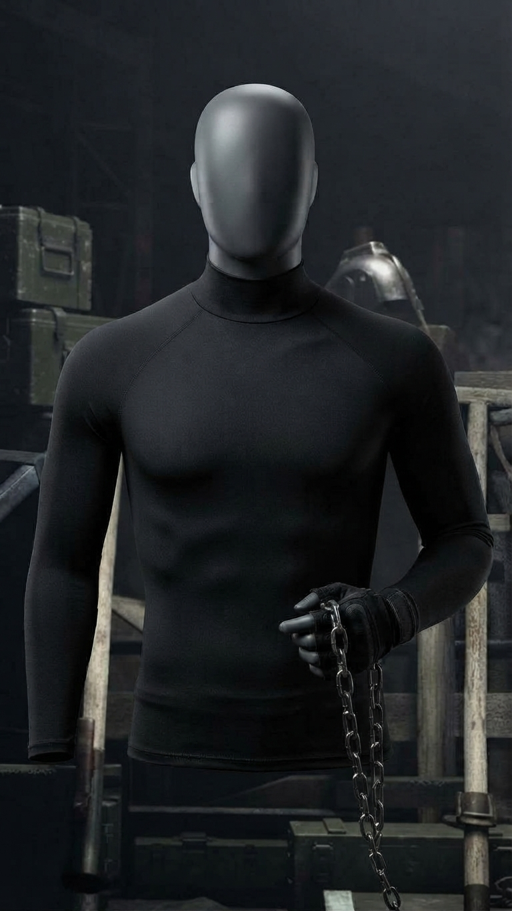

Здесь вы сможете приобрести вещи, связанные с:
- Леон С. Кеннеди
- Ада Вонг
- Альберт Вескер
- Джек Краузер
Леон С. Кеннеди
Куртка Леона

Классическая потёртая коричневая кожаная куртка-бомбардировщик с овчиной, вдохновленная культовым дизайном из игры в жанре survival horror.
30 000 сом
Узнать больше об этом товареПистолет SG-09 R

Кастомное личное оружие Леона С. Кеннеди из ремейка Resident Evil 4. Имеет матово-черную отделку, дульный компенсатор, подствольный фонарь и рукоятки Kendo.
50 000 сом
Узнать больше об этом товареРашгард

Зернистая фотография высокого разрешения с изображением матово-черного безликого манекена в темной промышленной мастерской. На манекен надета обтягивающая футболка с длинным рукавом и воротником-стойкой. Его рука в перчатке держит подвесную металлическую цепь.
6 000 сом
Узнать больше об этом товареБоевой нож USMC Ka-Bar

Винтажный боевой нож USMC Ka-Bar лежит на потертом деревянном ящике, рядом видны его кожаные ножны[cite: 2]. Нож оснащен набранной кожаной рукоятью и вороненым стальным клинком с четкой надписью «KA-BAR OLEAN. N.Y.»
25 000 сом
Узнать больше об этом товареКак сделать заказ?
Нажмите на иконку корзины
Заполните всплывающее окно
Укажите страну и город, куда нужно доставить
Ожидайте звонок менеджера